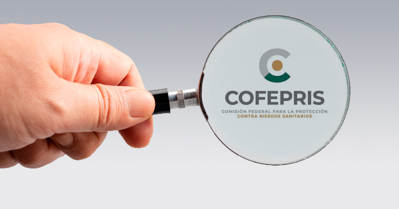
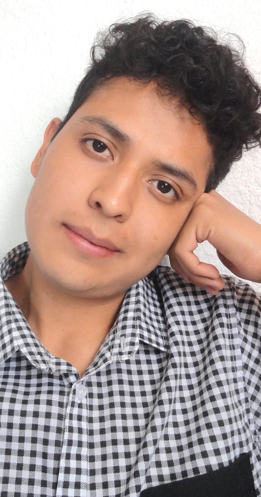
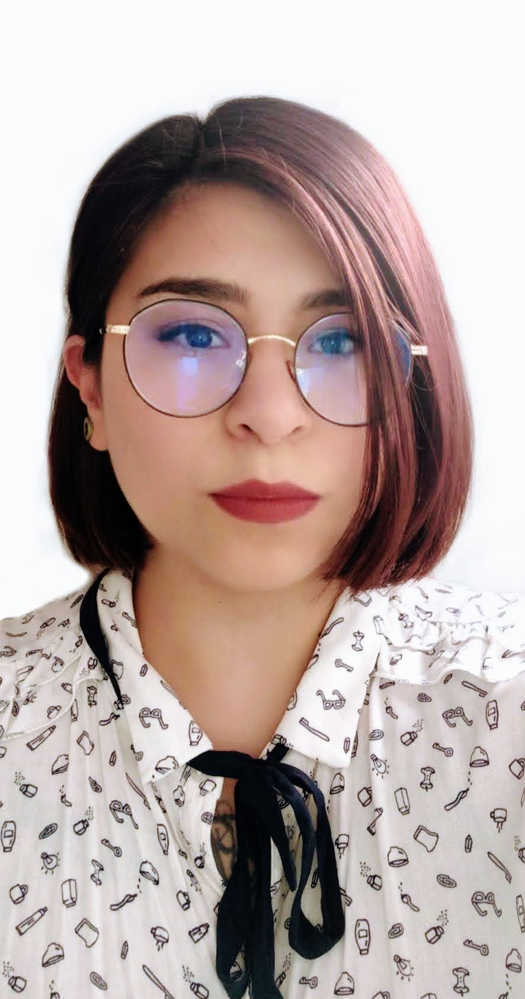
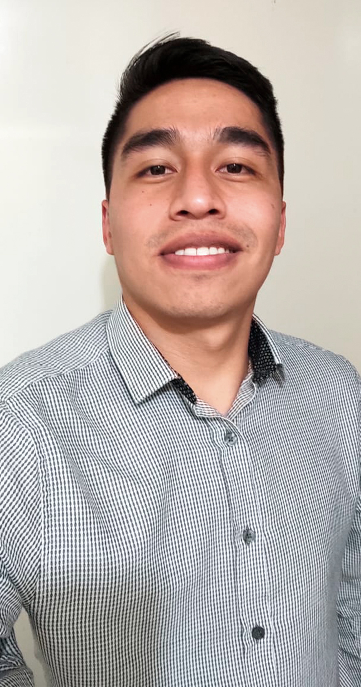

RadioMed es una empresa mexicana especializada en servicios de capacitación y asesoría en
protección y seguridad radiológica para diagnóstico médico con rayos X. Nuestro personal cuenta con
autorización de Asesor Especializado en Seguridad Radiológica avalada por la COFEPRIS.

Misión
El objetivo de RadioMed es ayudarlo a cumplir con la
normativa mexicana relacionada con la protección radiológica del paciente y del personal
ocupacionalmente expuesto (POE) y orientarlo de forma de didáctica en el tema de las
radiaciones
ionizantes.
Visión
Nuestro compromiso con el cliente es ofrecerle un
servicio integral de calidad y proporcionarle una asesoría profesional continua y
personalizada de acuerdo a sus necesidades, para esto RadioMed pone a su disposición una
amplia gamma de
servicios.
Hola, somos Carlos, América, Alejandra, Erick y Victor, somos el equipo tres del Cohorte de CDMX de
Generation, este es nuestro proyecto integrador, como ya leyeron arriba, Radio Med es una empresa
mexicana de nueva creación y como toda empresa necesita presencia en la por lo que elegimos este
proyecto para realizar una aplicación web tipo e-commerce
¡CONOCE A NUESTRO EQUIPO DE DESARROLLO!

Carlos Pérez
Fullstack Developer
Hola lector. Soy un jóven de 23 años apasionado de las Ciencias Experimentales y sus
aplicaciones. Me gusta trabajar en equipo, los retos y aprender como funcionan las cosas. Mi meta es volverme Físico
Médico e inventar intrumental biomédico. Estoy abierto a sus proyectos 😀
América Sánchez
UX designer & Front End Developer
Hola! Mi nombre es América, soy licenciada en Diseño y Maestra en Diseño,
información y
comunicación, ilustradora por hobbie y recién graduada de Generation como Java Fullstack Developer.

Alejandra Zataráin
Fullstack Developer
¡Hola a todos! Soy Alejandra, egresada del bootcamp de Generation como desarrolladora Java Fullstack.
Me encanta la ciencia y la tecnología, mi meta es inspirar a niñas y mujeres en áreas STEM a través de la programación .
Víctor Hugo Martínez Zamora
Fullstack Developer
¡Hola! Tengo 23 años y soy originario de San Martin de las Piramides, Estado de México.
He estado interesado en la programación y el desarrollo web desde hace 6 años. Actualmente quiero trabajar
dentro del desarrollo Java. Con buena comunicación, atento a los errores y a la
solución de estos podré desempeñarme satisfactoriamente en el entorno de trabajo.
